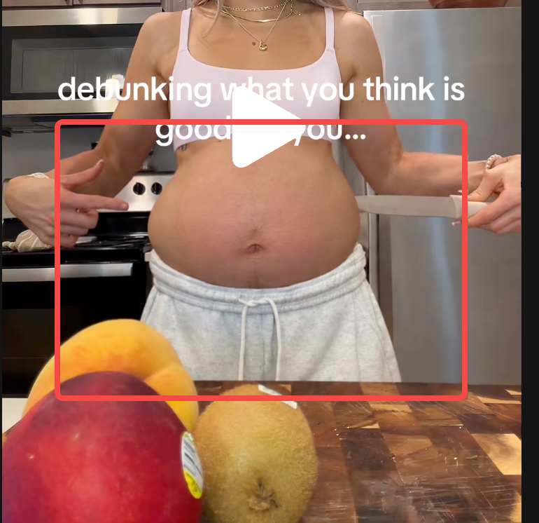

Recommended videos & scripts
GLP-1 Pain-Point Hook
Reverse-Psychology Hook + Personal GLP-1 Experience
Two more ways to tell it
Tap into the growing conversation around fiber: “We've focused on protein—now it's time to give fiber the same attention.” Explain how fiber supports gut health, regularity, and fullness, then introduce Daily Fiber Mix as an easy addition to your daily routine.
Create a simple, fiber-friendly recipe designed to support digestive regularity during a GLP-1 journey, with Daily Fiber Mix as one of the key ingredients. Explain the role of each ingredient, show the preparation process, and demonstrate how Daily Fiber Mix adds 6g of fiber without noticeably changing the taste or texture.
Professional Credibility + GLP-1 Pain Point
Professional Credibility + Science-Based Explanation
Hook to Use
Lead with the digestive challenges you've personally experienced during your GLP-1 journey.
Use images or on-screen graphics next to the corresponding areas of your body to make each pain point immediately clear.
Show or point to relatable concerns such as changes in bowel habits, bloating, digestive discomfort, heaviness, or nausea.

Hold your GLP-1 injection pen and open with a playful, unexpected line about one of the most relatable digestive concerns. Then establish credibility by sharing that you have been on your own GLP-1 journey for some time.
Shared Body
Step 1: What I Learned About Fiber on GLP-1
Fiber Can Be Easy to Overlook
“Since starting my GLP-1 journey, I've been eating smaller portions—which also means I have fewer opportunities to get enough fiber.”
“Everyone reminded me about protein and water, but no one talked enough about fiber.”
Digestive Changes
“As my appetite and eating habits changed, I started paying more attention to bloating and changes in my regularity.”
“Getting enough fiber became one of the basic habits that helped me feel more consistent and comfortable.”
More Than Regularity
“Fiber isn't only about regularity. It also supports your gut and helps you stay fuller longer.”
“Protein was already part of my routine. Fiber was the missing piece.”
Step 2: Show How It Fits Your GLP-1 Routine
Show yourself adding one stick to coffee, tea, water, or a protein shake you already drink.
Cover these points naturally.
“This isn't another routine to remember. When my appetite is lower and I don't feel like adding more food, another gummy, or another pill, I simply mix one flavorless stick into the drink I already have every day.”
“Each stick has 6g of fiber—about the amount found in 20 raspberries. It includes prebiotic fiber to support beneficial gut bacteria and helps support regular bowel movements while my eating habits are changing.”
Demonstrate how smoothly it mixes with no noticeable taste. You may include the provided easy-mix comparison footage if it fits naturally into your video.
Step 1: Explain Why Fiber Matters in a GLP-1 Routine
Pick 2–3 points that fit your expertise and support them with appropriate sources.
Why fiber may be overlooked
“Protein and hydration receive a lot of attention during a GLP-1 journey, but adequate fiber remains an important part of digestive health.”
“Eating less does not automatically mean meeting your daily fiber needs.”
How fiber supports the routine
“Fiber supports regular bowel movements and normal digestive function, while prebiotic fiber feeds beneficial gut bacteria. As part of a balanced diet, fiber can also help promote lasting fullness and support a healthy post-meal blood sugar response.”
Appropriate Positioning
“A fiber supplement does not treat GLP-1 medication side effects, but it can help close a dietary fiber gap when food intake changes.”
Evidence Overlay
When discussing GLP-1-related digestive changes, fiber intake, blood sugar, or another scientific benefit, display a credible source or evidence image on screen.
Step 2: Explain Why You Choose and Recommend Daily Fiber Mix
Drawing on your professional background, explain why you would choose Daily Fiber Mix for your own routine and recommend it as a practical way to support fiber intake. Focus on formula, digestive tolerance, and consistency.
“Each stick provides 6g of fiber—about the amount found in 20 raspberries—including PHGG-based prebiotic fiber to support beneficial gut bacteria and regular bowel movements. It is also Low-FODMAP, which may be an important consideration for people with sensitive digestive systems.”
“When smaller portions make dietary fiber easier to overlook, this provides a straightforward way to add fiber without requiring another meal, snack, pill, gummy, or sweet drink.”
“The best fiber routine is one someone can actually follow consistently. Daily Fiber Mix blends smoothly into coffee, tea, water, or a protein shake with no noticeable taste, so it fits into a habit that is already part of the day.”
CTA to Use
Choose one CTA direction and adapt it naturally to your personal experience. Every CTA should mention the Black Friday offer, limited-time BFCM gift, Lifetime Satisfaction Guarantee, and product link.